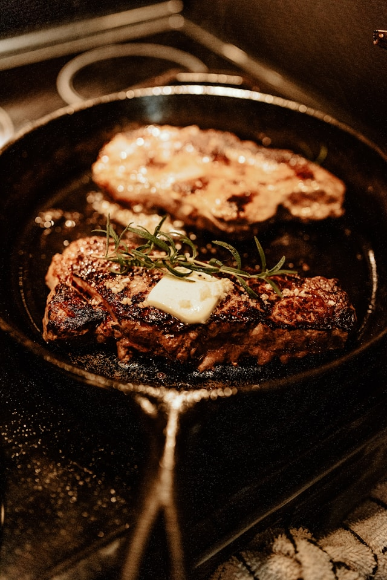

This sirloin steak recipe is served with very garlicky butter that makes this steak melt-in-your-mouth wonderful! I have never tasted any other steak that came even close to this recipe!
I like steak, I have yet to find my favorite steak restaurant but I do enjoy Texas Roadhouse